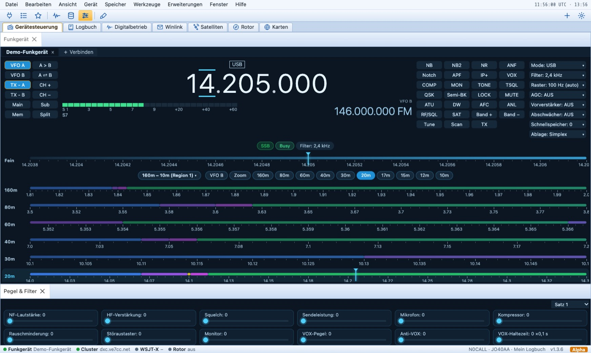
🎛️ Gerätesteuerung
Frequenz, Betriebsart, Filter und Pegel für dein Funkgerät – über Hamlib, eigene SDRs oder direkt per USB.
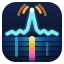
RigVibeDie Stationssoftware für Funkamateure. Funkgerät, Wasserfall, Digitalbetrieb, Logbuch, Quansheng-Handfunkgeräte und Notfunk – in einem Programm.
Alpha-Testphase: RigVibe ist neu und wächst mit seinen Nutzern. Wir sind auf deine Tests und Rückmeldungen angewiesen – Fehler melden oder Mail an info@rigvibe.de.
Ein Programm statt vieler – und alles greift ineinander.

Frequenz, Betriebsart, Filter und Pegel für dein Funkgerät – über Hamlib, eigene SDRs oder direkt per USB.
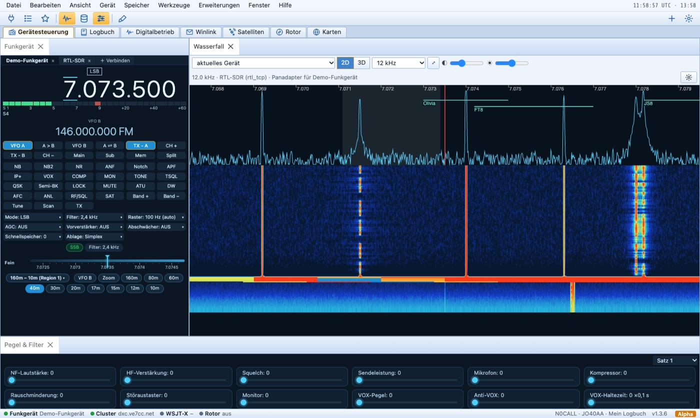
Spektrum, Wasserfall (2D, 3D und beides zusammen), Bandplan und auf Wunsch Spots aus PSK Reporter. Ein Klick aufs Signal stimmt ab und wählt die Betriebsart; den Durchlassbereich ziehst du mit der Maus.
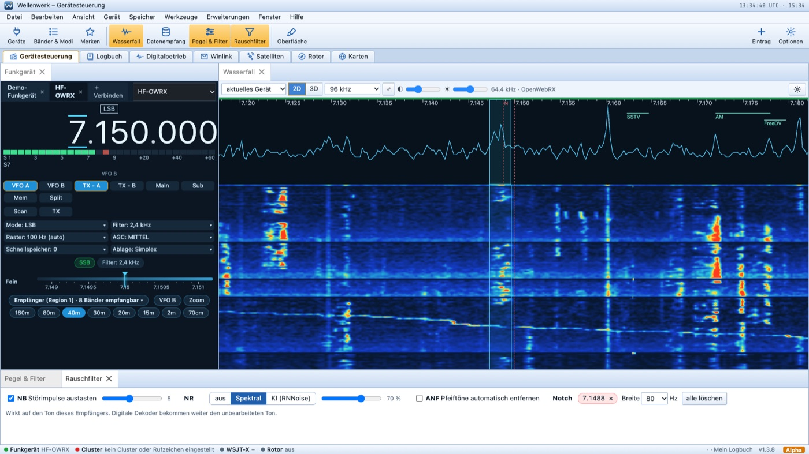
Störaustaster, spektrale Rauschminderung, KI-Filter und Notch – live im Empfang.
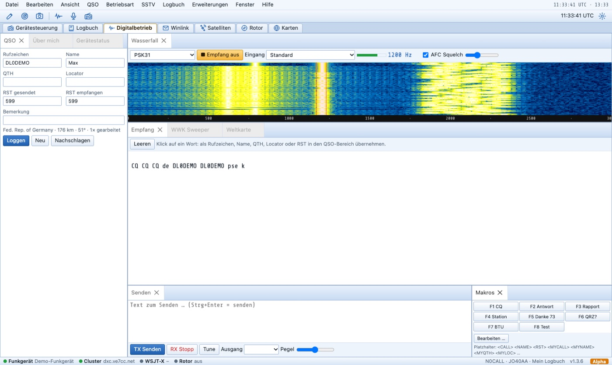
FT8, FT4, JS8, PSK, RTTY, Olivia, SSTV, KG-STV, Packet, FreeDV und Digitalfunk – alles eingebaut.
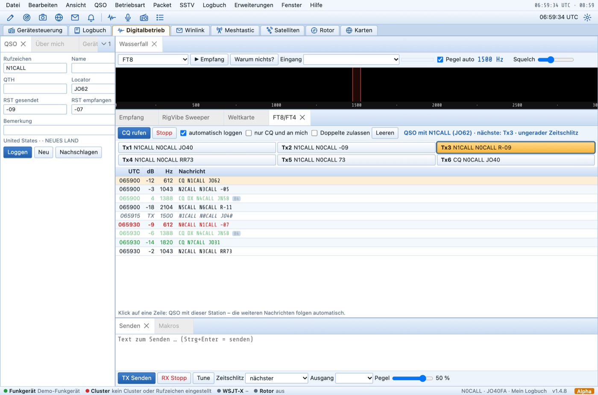
Station anklicken – RigVibe ruft, antwortet und loggt. Schon gearbeitete Stationen erkennt es.
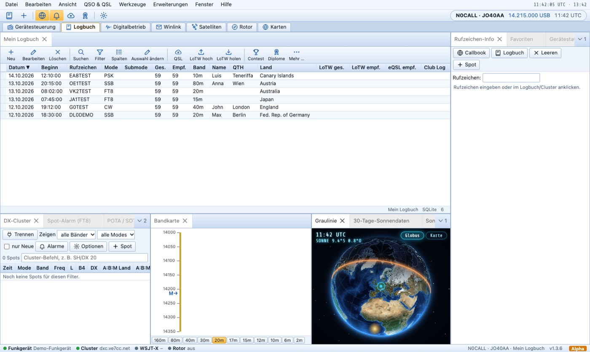
LoTW, eQSL, Clublog und QRZ, eigene QSL-Karten, Contest-Modus und Papierlog.
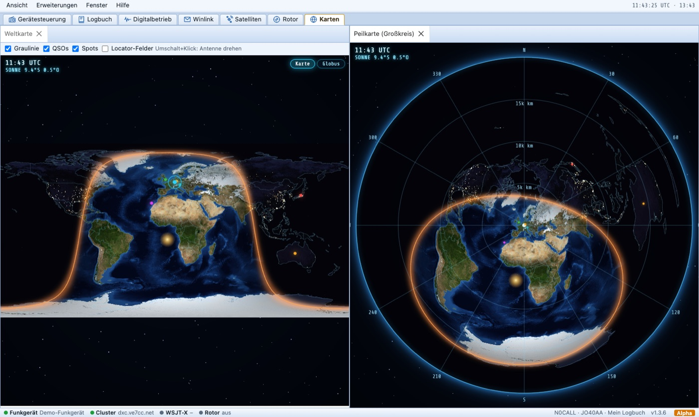
Erde mit Graulinie, Spots, Satelliten, Schiffen und Wettersonden, Rotor und Peilung.
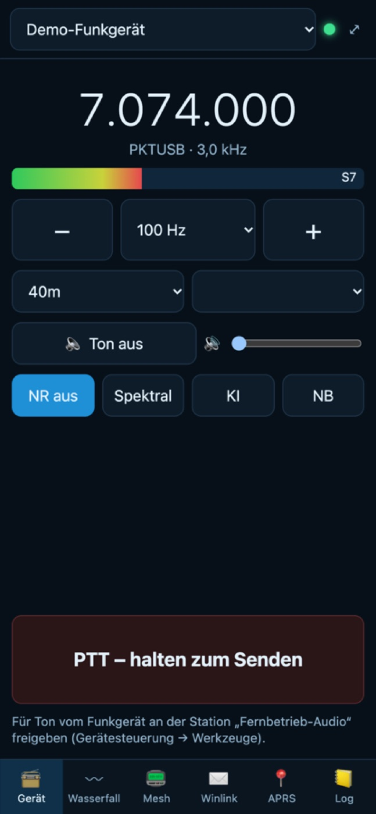
Funkgerät, Wasserfall, Meshtastic, Winlink, APRS und Logbuch – von unterwegs.
Auf einem Raspberry Pi mit Touch-Bildschirm wird RigVibe zum eigenständigen Funkgerät – im Vollbild, ohne Desktop und ohne Browser. Am sBitx v3 steuert es die Hardware selbst; die sBitx-Software braucht es nicht mehr.
Installation mit einer Zeile (Raspberry Pi OS 64 Bit):
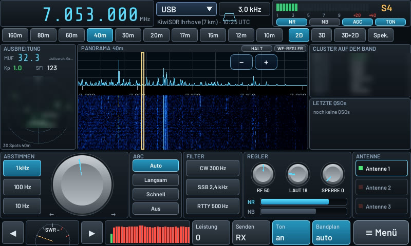
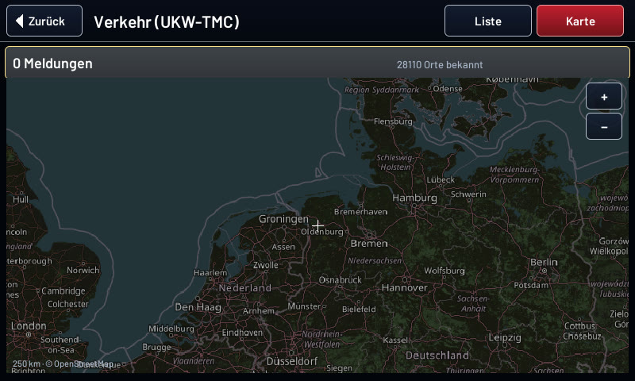
Mit der RigVibe-Firmware wird das Handfunkgerät zur Digitalstation – gesteuert über ein einziges USB-C-Kabel, ganz ohne Soundkarte.
Meldungen, Bilder und Dateien zwischen Leuchttürmen und Leitstelle – über jeden Weg, der gerade funktioniert.
Kostenlos. Version 1.10.7 – RigVibe meldet neue Versionen selbst.
RigVibe befindet sich in der Alpha-Testphase: Es kann noch Fehler geben. Melde sie bitte direkt aus dem Programm (Hilfe → Feedback / Problem melden), als GitHub-Issue, an info@rigvibe.de oder in der Telegram-Gruppe – jede Rückmeldung hilft.
Versionsinfos, Fehlerberichte, Skins und Erweiterungen: RigVibe bei Telegram
Anleitung: Deutsch · English · Fehler oder Wünsche: GitHub-Issues
RigVibe-Firmware für das Quansheng UV-K1 und UV-K5 V3 als eigener Multiboot-Slot – mit UV Studio installiert, die bisherige Firmware bleibt unangetastet.
RigVibe 1.0 auf Basis F4HWN Fusion v6.3.0 (Apache-2.0), fertig kompiliert; Lizenz und NOTICE liegen im ZIP. Vorher mit der Service-Edition ein External-Flash-Backup ziehen. Keine Gewähr.
Prüfsumme (SHA-256): 13c0b1812e9a…49567aed3cf